Note
Go to the end to download the full example code
Repairing artifacts with SSP#
This tutorial covers the basics of signal-space projection (SSP) and shows how SSP can be used for artifact repair; extended examples illustrate use of SSP for environmental noise reduction, and for repair of ocular and heartbeat artifacts.
We begin as always by importing the necessary Python modules. To save ourselves
from repeatedly typing mne.preprocessing we’ll directly import a handful of
functions from that submodule:
import os
import numpy as np
import matplotlib.pyplot as plt
import mne
from mne.preprocessing import (create_eog_epochs, create_ecg_epochs,
compute_proj_ecg, compute_proj_eog)
Note
Before applying SSP (or any artifact repair strategy), be sure to observe the artifacts in your data to make sure you choose the right repair tool. Sometimes the right tool is no tool at all — if the artifacts are small enough you may not even need to repair them to get good analysis results. See Overview of artifact detection for guidance on detecting and visualizing various types of artifact.
What is SSP?#
Signal-space projection (SSP) [1] is a technique for removing noise from EEG and MEG signals by projecting the signal onto a lower-dimensional subspace. The subspace is chosen by calculating the average pattern across sensors when the noise is present, treating that pattern as a “direction” in the sensor space, and constructing the subspace to be orthogonal to the noise direction (for a detailed walk-through of projection see Background on projectors and projections).
The most common use of SSP is to remove noise from MEG signals when the noise comes from environmental sources (sources outside the subject’s body and the MEG system, such as the electromagnetic fields from nearby electrical equipment) and when that noise is stationary (doesn’t change much over the duration of the recording). However, SSP can also be used to remove biological artifacts such as heartbeat (ECG) and eye movement (EOG) artifacts. Examples of each of these are given below.
Example: Environmental noise reduction from empty-room recordings#
The example data was recorded on a Neuromag system,
which stores SSP projectors for environmental noise removal in the system
configuration (so that reasonably clean raw data can be viewed in real-time
during acquisition). For this reason, all the Raw data in
the example dataset already includes SSP projectors, which are noted in the
output when loading the data:
sample_data_folder = mne.datasets.sample.data_path()
sample_data_raw_file = os.path.join(sample_data_folder, 'MEG', 'sample',
'sample_audvis_raw.fif')
# here we crop and resample just for speed
raw = mne.io.read_raw_fif(sample_data_raw_file).crop(0, 60)
raw.load_data().resample(100)
Opening raw data file /home/circleci/mne_data/MNE-sample-data/MEG/sample/sample_audvis_raw.fif...
Read a total of 3 projection items:
PCA-v1 (1 x 102) idle
PCA-v2 (1 x 102) idle
PCA-v3 (1 x 102) idle
Range : 25800 ... 192599 = 42.956 ... 320.670 secs
Ready.
Reading 0 ... 36037 = 0.000 ... 60.000 secs...
86 events found
Event IDs: [ 1 2 3 4 5 32]
86 events found
Event IDs: [ 1 2 3 4 5 32]
The example data also includes an “empty room” recording taken the same day as the recording of the subject. This will provide a more accurate estimate of environmental noise than the projectors stored with the system (which are typically generated during annual maintenance and tuning). Since we have this subject-specific empty-room recording, we’ll create our own projectors from it and discard the system-provided SSP projectors (saving them first, for later comparison with the custom ones):
system_projs = raw.info['projs']
raw.del_proj()
empty_room_file = os.path.join(sample_data_folder, 'MEG', 'sample',
'ernoise_raw.fif')
# cropped to 60 s just for speed
empty_room_raw = mne.io.read_raw_fif(empty_room_file).crop(0, 30)
Opening raw data file /home/circleci/mne_data/MNE-sample-data/MEG/sample/ernoise_raw.fif...
Isotrak not found
Read a total of 3 projection items:
PCA-v1 (1 x 102) idle
PCA-v2 (1 x 102) idle
PCA-v3 (1 x 102) idle
Range : 19800 ... 85867 = 32.966 ... 142.965 secs
Ready.
Notice that the empty room recording itself has the system-provided SSP projectors in it — we’ll remove those from the empty room file too.
Visualizing the empty-room noise#
Let’s take a look at the spectrum of the empty room noise. We can view an individual spectrum for each sensor, or an average (with confidence band) across sensors:
spectrum = empty_room_raw.compute_psd()
for average in (False, True):
spectrum.plot(average=average, dB=False, xscale='log')
- 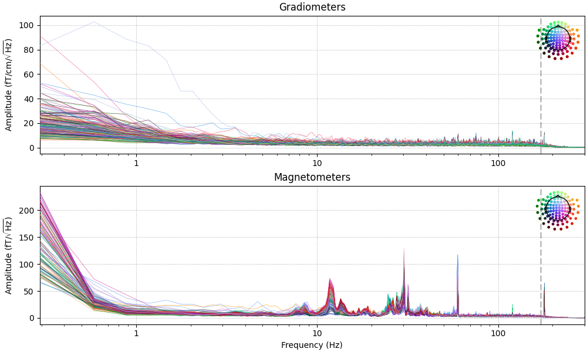
- 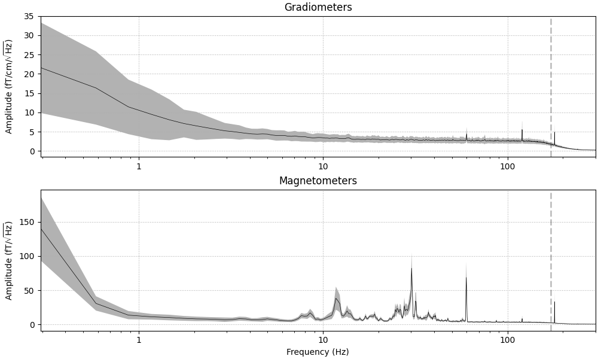
Effective window size : 3.410 (s)
Creating the empty-room projectors#
We create the SSP vectors using compute_proj_raw, and control
the number of projectors with parameters n_grad and n_mag. Once
created, the field pattern of the projectors can be easily visualized with
plot_projs_topomap. We include the parameter
vlim='joint' so that the colormap is computed jointly for all projectors
of a given channel type; this makes it easier to compare their relative
smoothness. Note that for the function to know the types of channels in a
projector, you must also provide the corresponding Info object:
empty_room_projs = mne.compute_proj_raw(empty_room_raw, n_grad=3, n_mag=3)
mne.viz.plot_projs_topomap(empty_room_projs, colorbar=True, vlim='joint',
info=empty_room_raw.info)
Not setting metadata
29 matching events found
No baseline correction applied
[Parallel(n_jobs=1)]: Using backend SequentialBackend with 1 concurrent workers.
[Parallel(n_jobs=1)]: Done 1 out of 1 | elapsed: 0.0s remaining: 0.0s
[Parallel(n_jobs=1)]: Done 2 out of 2 | elapsed: 0.0s remaining: 0.0s
[Parallel(n_jobs=1)]: Done 3 out of 3 | elapsed: 0.0s remaining: 0.0s
[Parallel(n_jobs=1)]: Done 4 out of 4 | elapsed: 0.0s remaining: 0.0s
[Parallel(n_jobs=1)]: Done 29 out of 29 | elapsed: 0.2s finished
Adding projection: planar-Raw-0.000-30.001-PCA-01
Adding projection: planar-Raw-0.000-30.001-PCA-02
Adding projection: planar-Raw-0.000-30.001-PCA-03
Adding projection: axial-Raw-0.000-30.001-PCA-01
Adding projection: axial-Raw-0.000-30.001-PCA-02
Adding projection: axial-Raw-0.000-30.001-PCA-03
Notice that the gradiometer-based projectors seem to reflect problems with individual sensor units rather than a global noise source (indeed, planar gradiometers are much less sensitive to distant sources). This is the reason that the system-provided noise projectors are computed only for magnetometers. Comparing the system-provided projectors to the subject-specific ones, we can see they are reasonably similar (though in a different order) and the left-right component seems to have changed polarity.
fig, axs = plt.subplots(2, 3)
for idx, _projs in enumerate([system_projs, empty_room_projs[3:]]):
mne.viz.plot_projs_topomap(_projs, axes=axs[idx], colorbar=True,
vlim='joint', info=empty_room_raw.info)
Visualizing how projectors affect the signal#
We could visualize the different effects these have on the data by applying
each set of projectors to different copies of the Raw object
using apply_proj. However, the plot
method has a proj parameter that allows us to temporarily apply
projectors while plotting, so we can use this to visualize the difference
without needing to copy the data. Because the projectors are so similar, we
need to zoom in pretty close on the data to see any differences:
mags = mne.pick_types(raw.info, meg='mag')
for title, projs in [('system', system_projs),
('subject-specific', empty_room_projs[3:])]:
raw.add_proj(projs, remove_existing=True)
with mne.viz.use_browser_backend('matplotlib'):
fig = raw.plot(proj=True, order=mags, duration=1, n_channels=2)
fig.subplots_adjust(top=0.9) # make room for title
fig.suptitle('{} projectors'.format(title), size='xx-large', weight='bold')
- 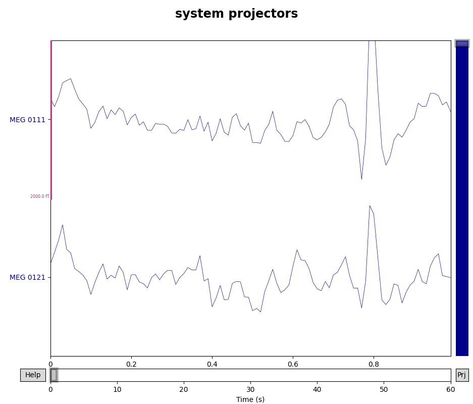
- 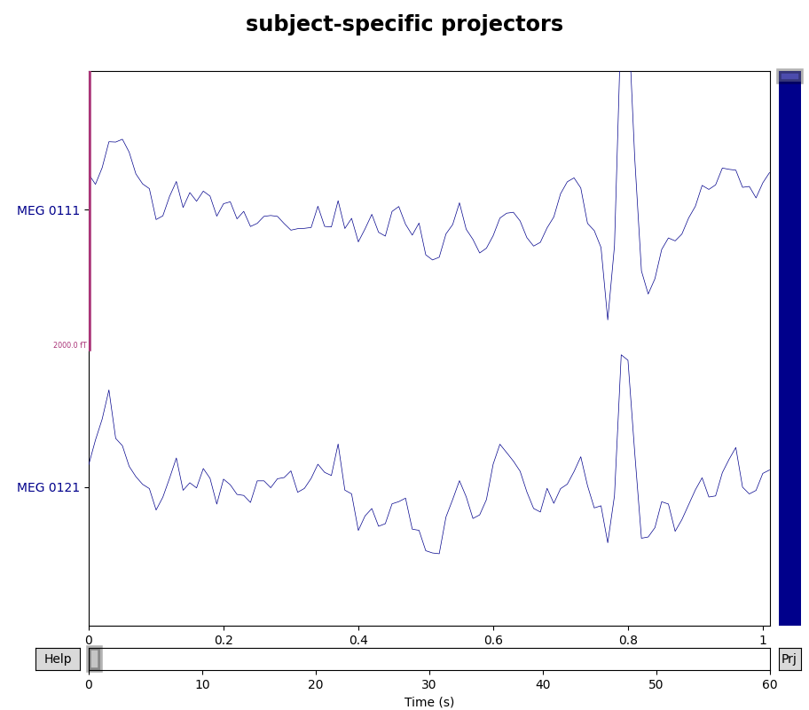
3 projection items deactivated
Using matplotlib as 2D backend.
Using qt as 2D backend.
3 projection items deactivated
Using matplotlib as 2D backend.
Using qt as 2D backend.
The effect is sometimes easier to see on averaged data. Here we use an
interactive feature of mne.Evoked.plot_topomap to turn projectors on
and off to see the effect on the data. Of course, the interactivity won’t
work on the tutorial website, but you can download the tutorial and try it
locally:
events = mne.find_events(raw, stim_channel='STI 014')
event_id = {'auditory/left': 1}
# NOTE: appropriate rejection criteria are highly data-dependent
reject = dict(mag=4000e-15, # 4000 fT
grad=4000e-13, # 4000 fT/cm
eeg=150e-6, # 150 µV
eog=250e-6) # 250 µV
# time range where we expect to see the auditory N100: 50-150 ms post-stimulus
times = np.linspace(0.05, 0.15, 5)
epochs = mne.Epochs(raw, events, event_id, proj='delayed', reject=reject)
fig = epochs.average().plot_topomap(times, proj='interactive')
- 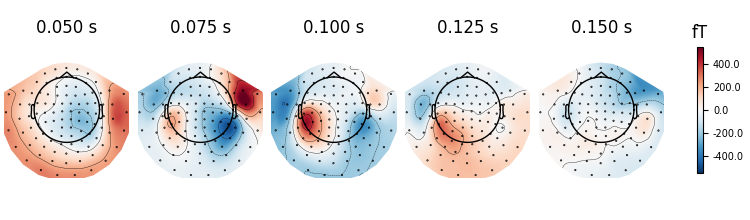
- 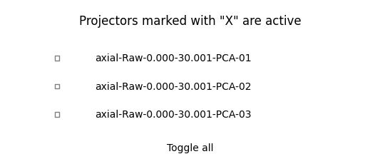
86 events found
Event IDs: [ 1 2 3 4 5 32]
Not setting metadata
20 matching events found
Setting baseline interval to [-0.2, 0.0] s
Applying baseline correction (mode: mean)
Entering delayed SSP mode.
Created an SSP operator (subspace dimension = 3)
Rejecting epoch based on EEG : ['EEG 001', 'EEG 002', 'EEG 003', 'EEG 006', 'EEG 007']
NOTE: pick_channels() is a legacy function. New code should use inst.pick(...).
Plotting the ERP/F using evoked.plot() or evoked.plot_joint() with
and without projectors applied can also be informative, as can plotting with
proj='reconstruct', which can reduce the signal bias introduced by
projections (see Visualizing SSP sensor-space bias via signal reconstruction below).
Example: EOG and ECG artifact repair#
Visualizing the artifacts#
As mentioned in the ICA tutorial, an important first step is visualizing the artifacts you want to repair. Here they are in the raw data:
# pick some channels that clearly show heartbeats and blinks
regexp = r'(MEG [12][45][123]1|EEG 00.)'
artifact_picks = mne.pick_channels_regexp(raw.ch_names, regexp=regexp)
raw.plot(order=artifact_picks, n_channels=len(artifact_picks))
Repairing ECG artifacts with SSP#
MNE-Python provides several functions for detecting and removing heartbeats
from EEG and MEG data. As we saw in Overview of artifact detection,
create_ecg_epochs can be used to both detect and
extract heartbeat artifacts into an Epochs object, which can
be used to visualize how the heartbeat artifacts manifest across the sensors:
- 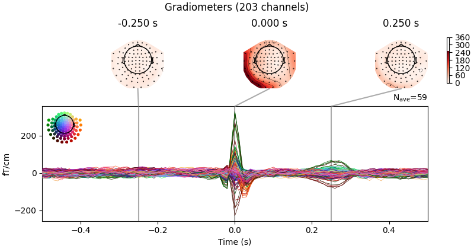
- 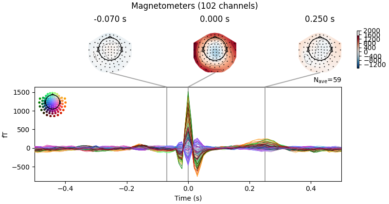
- 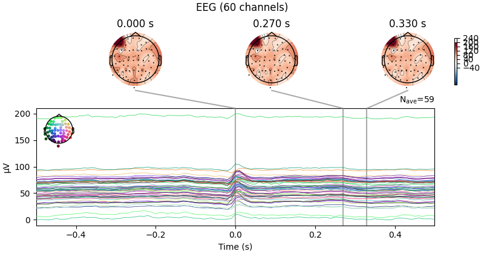
Reconstructing ECG signal from Magnetometers
Setting up band-pass filter from 8 - 16 Hz
FIR filter parameters
---------------------
Designing a two-pass forward and reverse, zero-phase, non-causal bandpass filter:
- Windowed frequency-domain design (firwin2) method
- Hann window
- Lower passband edge: 8.00
- Lower transition bandwidth: 0.50 Hz (-12 dB cutoff frequency: 7.75 Hz)
- Upper passband edge: 16.00 Hz
- Upper transition bandwidth: 0.50 Hz (-12 dB cutoff frequency: 16.25 Hz)
- Filter length: 1000 samples (10.000 s)
Number of ECG events detected : 59 (average pulse 59 / min.)
Not setting metadata
59 matching events found
No baseline correction applied
Created an SSP operator (subspace dimension = 3)
Using data from preloaded Raw for 59 events and 101 original time points ...
0 bad epochs dropped
NOTE: pick_channels() is a legacy function. New code should use inst.pick(...).
Created an SSP operator (subspace dimension = 3)
3 projection items activated
SSP projectors applied...
NOTE: pick_channels() is a legacy function. New code should use inst.pick(...).
NOTE: pick_channels() is a legacy function. New code should use inst.pick(...).
Removing projector <Projection | axial-Raw-0.000-30.001-PCA-01, active : True, n_channels : 102, exp. var : 80.59%>
Removing projector <Projection | axial-Raw-0.000-30.001-PCA-02, active : True, n_channels : 102, exp. var : 14.59%>
Removing projector <Projection | axial-Raw-0.000-30.001-PCA-03, active : True, n_channels : 102, exp. var : 3.87%>
NOTE: pick_channels() is a legacy function. New code should use inst.pick(...).
NOTE: pick_channels() is a legacy function. New code should use inst.pick(...).
NOTE: pick_channels() is a legacy function. New code should use inst.pick(...).
NOTE: pick_channels() is a legacy function. New code should use inst.pick(...).
Removing projector <Projection | axial-Raw-0.000-30.001-PCA-01, active : True, n_channels : 102, exp. var : 80.59%>
Removing projector <Projection | axial-Raw-0.000-30.001-PCA-02, active : True, n_channels : 102, exp. var : 14.59%>
Removing projector <Projection | axial-Raw-0.000-30.001-PCA-03, active : True, n_channels : 102, exp. var : 3.87%>
NOTE: pick_channels() is a legacy function. New code should use inst.pick(...).
Looks like the EEG channels are pretty spread out; let’s baseline-correct and plot again:
ecg_evoked.apply_baseline((None, None))
ecg_evoked.plot_joint()
- 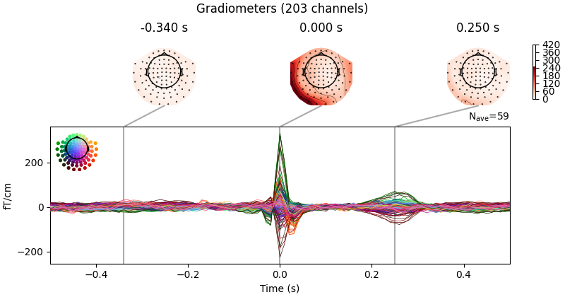
- 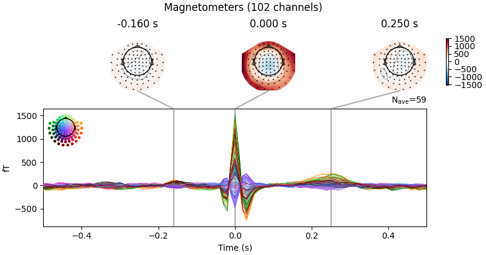
- 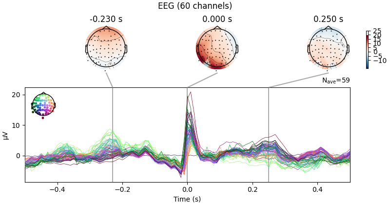
Applying baseline correction (mode: mean)
Created an SSP operator (subspace dimension = 3)
3 projection items activated
SSP projectors applied...
NOTE: pick_channels() is a legacy function. New code should use inst.pick(...).
NOTE: pick_channels() is a legacy function. New code should use inst.pick(...).
Removing projector <Projection | axial-Raw-0.000-30.001-PCA-01, active : True, n_channels : 102, exp. var : 80.59%>
Removing projector <Projection | axial-Raw-0.000-30.001-PCA-02, active : True, n_channels : 102, exp. var : 14.59%>
Removing projector <Projection | axial-Raw-0.000-30.001-PCA-03, active : True, n_channels : 102, exp. var : 3.87%>
NOTE: pick_channels() is a legacy function. New code should use inst.pick(...).
NOTE: pick_channels() is a legacy function. New code should use inst.pick(...).
NOTE: pick_channels() is a legacy function. New code should use inst.pick(...).
NOTE: pick_channels() is a legacy function. New code should use inst.pick(...).
Removing projector <Projection | axial-Raw-0.000-30.001-PCA-01, active : True, n_channels : 102, exp. var : 80.59%>
Removing projector <Projection | axial-Raw-0.000-30.001-PCA-02, active : True, n_channels : 102, exp. var : 14.59%>
Removing projector <Projection | axial-Raw-0.000-30.001-PCA-03, active : True, n_channels : 102, exp. var : 3.87%>
NOTE: pick_channels() is a legacy function. New code should use inst.pick(...).
To compute SSP projectors for the heartbeat artifact, you can use
compute_proj_ecg, which takes a
Raw object as input and returns the requested number of
projectors for magnetometers, gradiometers, and EEG channels (default is two
projectors for each channel type).
compute_proj_ecg also returns an events
array containing the sample numbers corresponding to the peak of the
R wave of each detected
heartbeat.
projs, events = compute_proj_ecg(raw, n_grad=1, n_mag=1, n_eeg=1, reject=None)
Including 3 SSP projectors from raw file
Running ECG SSP computation
Reconstructing ECG signal from Magnetometers
Setting up band-pass filter from 5 - 35 Hz
FIR filter parameters
---------------------
Designing a two-pass forward and reverse, zero-phase, non-causal bandpass filter:
- Windowed frequency-domain design (firwin2) method
- Hann window
- Lower passband edge: 5.00
- Lower transition bandwidth: 0.50 Hz (-12 dB cutoff frequency: 4.75 Hz)
- Upper passband edge: 35.00 Hz
- Upper transition bandwidth: 0.50 Hz (-12 dB cutoff frequency: 35.25 Hz)
- Filter length: 1000 samples (10.000 s)
Number of ECG events detected : 58 (average pulse 58 / min.)
Computing projector
Filtering a subset of channels. The highpass and lowpass values in the measurement info will not be updated.
Filtering raw data in 1 contiguous segment
Setting up band-pass filter from 1 - 35 Hz
FIR filter parameters
---------------------
Designing a two-pass forward and reverse, zero-phase, non-causal bandpass filter:
- Windowed frequency-domain design (firwin2) method
- Hamming window
- Lower passband edge: 1.00
- Lower transition bandwidth: 0.50 Hz (-12 dB cutoff frequency: 0.75 Hz)
- Upper passband edge: 35.00 Hz
- Upper transition bandwidth: 0.50 Hz (-12 dB cutoff frequency: 35.25 Hz)
- Filter length: 1000 samples (10.000 s)
[Parallel(n_jobs=1)]: Using backend SequentialBackend with 1 concurrent workers.
[Parallel(n_jobs=1)]: Done 1 out of 1 | elapsed: 0.0s remaining: 0.0s
[Parallel(n_jobs=1)]: Done 2 out of 2 | elapsed: 0.0s remaining: 0.0s
[Parallel(n_jobs=1)]: Done 3 out of 3 | elapsed: 0.0s remaining: 0.0s
[Parallel(n_jobs=1)]: Done 4 out of 4 | elapsed: 0.0s remaining: 0.0s
[Parallel(n_jobs=1)]: Done 365 out of 365 | elapsed: 0.2s finished
Not setting metadata
58 matching events found
No baseline correction applied
Created an SSP operator (subspace dimension = 3)
3 projection items activated
Using data from preloaded Raw for 58 events and 61 original time points ...
0 bad epochs dropped
NOTE: pick_channels() is a legacy function. New code should use inst.pick(...).
Adding projection: planar--0.200-0.400-PCA-01
Adding projection: axial--0.200-0.400-PCA-01
Adding projection: eeg--0.200-0.400-PCA-01
Done.
The first line of output tells us that
compute_proj_ecg found three existing projectors
already in the Raw object, and will include those in the
list of projectors that it returns (appending the new ECG projectors to the
end of the list). If you don’t want that, you can change that behavior with
the boolean no_proj parameter. Since we’ve already run the computation,
we can just as easily separate out the ECG projectors by indexing the list of
projectors:
[<Projection | ECG-planar--0.200-0.400-PCA-01, active : False, n_channels : 203, exp. var : 74.55%>, <Projection | ECG-axial--0.200-0.400-PCA-01, active : False, n_channels : 102, exp. var : 94.96%>, <Projection | ECG-eeg--0.200-0.400-PCA-01, active : False, n_channels : 59, exp. var : 77.45%>]
Just like with the empty-room projectors, we can visualize the scalp distribution:
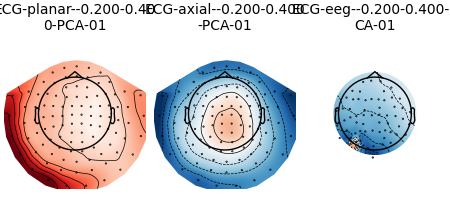Moreover, because these projectors were created using epochs chosen specifically because they contain time-locked artifacts, we can do a joint plot of the projectors and their effect on the time-averaged epochs. This figure has three columns:
The left shows the data traces before (black) and after (green) projection. We can see that the ECG artifact is well suppressed by one projector per channel type.
The center shows the topomaps associated with the projectors, in this case just a single topography for our one projector per channel type.
The right again shows the data traces (black), but this time with those traces also projected onto the first projector for each channel type (red) plus one surrogate ground truth for an ECG channel (MEG 0111).
# ideally here we would just do `picks_trace='ecg'`, but this dataset did not
# have a dedicated ECG channel recorded, so we just pick a channel that was
# very sensitive to the artifact
fig = mne.viz.plot_projs_joint(ecg_projs, ecg_evoked, picks_trace='MEG 0111')
fig.suptitle('ECG projectors')
NOTE: pick_channels() is a legacy function. New code should use inst.pick(...).
Removing projector <Projection | axial-Raw-0.000-30.001-PCA-01, active : False, n_channels : 102, exp. var : 80.59%>
Removing projector <Projection | axial-Raw-0.000-30.001-PCA-02, active : False, n_channels : 102, exp. var : 14.59%>
Removing projector <Projection | axial-Raw-0.000-30.001-PCA-03, active : False, n_channels : 102, exp. var : 3.87%>
1 projection items deactivated
NOTE: pick_channels() is a legacy function. New code should use inst.pick(...).
1 projection items deactivated
NOTE: pick_channels() is a legacy function. New code should use inst.pick(...).
Removing projector <Projection | axial-Raw-0.000-30.001-PCA-01, active : False, n_channels : 102, exp. var : 80.59%>
Removing projector <Projection | axial-Raw-0.000-30.001-PCA-02, active : False, n_channels : 102, exp. var : 14.59%>
Removing projector <Projection | axial-Raw-0.000-30.001-PCA-03, active : False, n_channels : 102, exp. var : 3.87%>
1 projection items deactivated
Since no dedicated ECG sensor channel was detected in the
Raw object, by default
compute_proj_ecg used the magnetometers to
estimate the ECG signal (as stated on the third line of output, above). You
can also supply the ch_name parameter to restrict which channel to use
for ECG artifact detection; this is most useful when you had an ECG sensor
but it is not labeled as such in the Raw file.
The next few lines of the output describe the filter used to isolate ECG
events. The default settings are usually adequate, but the filter can be
customized via the parameters ecg_l_freq, ecg_h_freq, and
filter_length (see the documentation of
compute_proj_ecg for details).
Once the ECG events have been identified,
compute_proj_ecg will also filter the data
channels before extracting epochs around each heartbeat, using the parameter
values given in l_freq, h_freq, filter_length, filter_method,
and iir_params. Here again, the default parameter values are usually
adequate.
By default, the filtered epochs will be averaged together
before the projection is computed; this can be controlled with the boolean
average parameter. In general this improves the signal-to-noise (where
“signal” here is our artifact!) ratio because the artifact temporal waveform
is fairly similar across epochs and well time locked to the detected events.
To get a sense of how the heartbeat affects the signal at each sensor, you can plot the data with and without the ECG projectors:
raw.del_proj()
for title, proj in [('Without', empty_room_projs), ('With', ecg_projs)]:
raw.add_proj(proj, remove_existing=False)
with mne.viz.use_browser_backend('matplotlib'):
fig = raw.plot(order=artifact_picks, n_channels=len(artifact_picks))
fig.subplots_adjust(top=0.9) # make room for title
fig.suptitle('{} ECG projectors'.format(title), size='xx-large',
weight='bold')
- 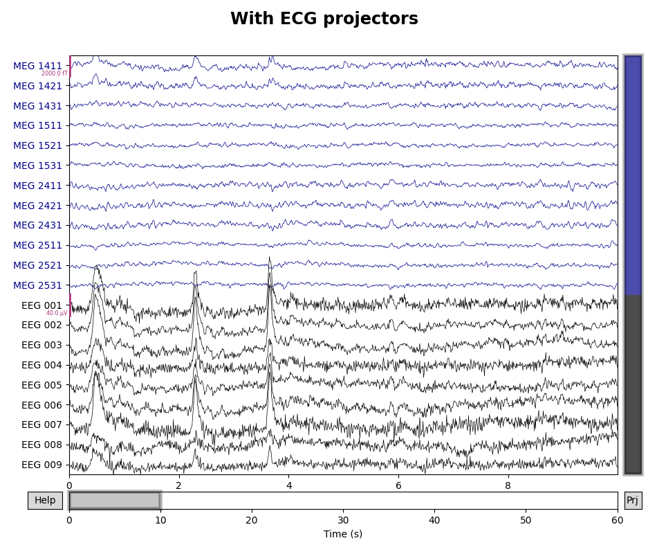
6 projection items deactivated
Using matplotlib as 2D backend.
Using qt as 2D backend.
3 projection items deactivated
Using matplotlib as 2D backend.
Using qt as 2D backend.
Finally, note that above we passed reject=None to the
compute_proj_ecg function, meaning that all
detected ECG epochs would be used when computing the projectors (regardless
of signal quality in the data sensors during those epochs). The default
behavior is to reject epochs based on signal amplitude: epochs with
peak-to-peak amplitudes exceeding 50 µV in EEG channels, 250 µV in EOG
channels, 2000 fT/cm in gradiometer channels, or 3000 fT in magnetometer
channels. You can change these thresholds by passing a dictionary with keys
eeg, eog, mag, and grad (though be sure to pass the threshold
values in volts, teslas, or teslas/meter). Generally, it is a good idea to
reject such epochs when computing the ECG projectors (since presumably the
high-amplitude fluctuations in the channels are noise, not reflective of
brain activity); passing reject=None above was done simply to avoid the
dozens of extra lines of output (enumerating which sensor(s) were responsible
for each rejected epoch) from cluttering up the tutorial.
Note
compute_proj_ecg has a similar parameter
flat for specifying the minimum acceptable peak-to-peak amplitude
for each channel type.
While compute_proj_ecg conveniently combines
several operations into a single function, MNE-Python also provides functions
for performing each part of the process. Specifically:
mne.preprocessing.find_ecg_eventsfor detecting heartbeats in aRawobject and returning a corresponding events arraymne.preprocessing.create_ecg_epochsfor detecting heartbeats in aRawobject and returning anEpochsobjectmne.compute_proj_epochsfor creating projector(s) from anyEpochsobject
See the documentation of each function for further details.
Repairing EOG artifacts with SSP#
Once again let’s visualize our artifact before trying to repair it. We’ve seen above the large deflections in frontal EEG channels in the raw data; here is how the ocular artifacts manifests across all the sensors:
eog_evoked = create_eog_epochs(raw).average(picks='all')
eog_evoked.apply_baseline((None, None))
eog_evoked.plot_joint()
- 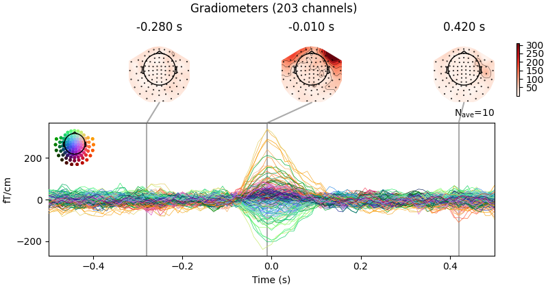
- 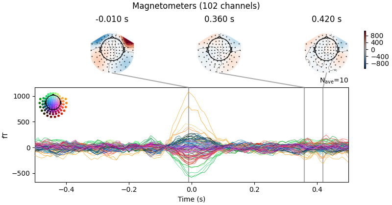
- 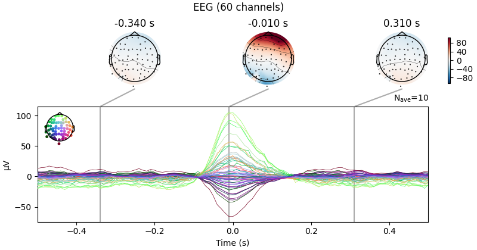
Using EOG channel: EOG 061
EOG channel index for this subject is: [375]
Filtering the data to remove DC offset to help distinguish blinks from saccades
Setting up band-pass filter from 1 - 10 Hz
FIR filter parameters
---------------------
Designing a two-pass forward and reverse, zero-phase, non-causal bandpass filter:
- Windowed frequency-domain design (firwin2) method
- Hann window
- Lower passband edge: 1.00
- Lower transition bandwidth: 0.50 Hz (-12 dB cutoff frequency: 0.75 Hz)
- Upper passband edge: 10.00 Hz
- Upper transition bandwidth: 0.50 Hz (-12 dB cutoff frequency: 10.25 Hz)
- Filter length: 1000 samples (10.000 s)
[Parallel(n_jobs=1)]: Using backend SequentialBackend with 1 concurrent workers.
[Parallel(n_jobs=1)]: Done 1 out of 1 | elapsed: 0.0s remaining: 0.0s
[Parallel(n_jobs=1)]: Done 1 out of 1 | elapsed: 0.0s finished
Now detecting blinks and generating corresponding events
Found 10 significant peaks
Number of EOG events detected: 10
Not setting metadata
10 matching events found
No baseline correction applied
Created an SSP operator (subspace dimension = 9)
Using data from preloaded Raw for 10 events and 101 original time points ...
0 bad epochs dropped
NOTE: pick_channels() is a legacy function. New code should use inst.pick(...).
Applying baseline correction (mode: mean)
Created an SSP operator (subspace dimension = 9)
9 projection items activated
SSP projectors applied...
NOTE: pick_channels() is a legacy function. New code should use inst.pick(...).
NOTE: pick_channels() is a legacy function. New code should use inst.pick(...).
Removing projector <Projection | axial-Raw-0.000-30.001-PCA-01, active : True, n_channels : 102, exp. var : 80.59%>
Removing projector <Projection | axial-Raw-0.000-30.001-PCA-02, active : True, n_channels : 102, exp. var : 14.59%>
Removing projector <Projection | axial-Raw-0.000-30.001-PCA-03, active : True, n_channels : 102, exp. var : 3.87%>
Removing projector <Projection | ECG-axial--0.200-0.400-PCA-01, active : True, n_channels : 102, exp. var : 94.96%>
Removing projector <Projection | ECG-eeg--0.200-0.400-PCA-01, active : True, n_channels : 59, exp. var : 77.45%>
NOTE: pick_channels() is a legacy function. New code should use inst.pick(...).
NOTE: pick_channels() is a legacy function. New code should use inst.pick(...).
Removing projector <Projection | planar-Raw-0.000-30.001-PCA-01, active : True, n_channels : 203, exp. var : 5.08%>
Removing projector <Projection | planar-Raw-0.000-30.001-PCA-02, active : True, n_channels : 203, exp. var : 4.38%>
Removing projector <Projection | planar-Raw-0.000-30.001-PCA-03, active : True, n_channels : 203, exp. var : 2.99%>
Removing projector <Projection | ECG-planar--0.200-0.400-PCA-01, active : True, n_channels : 203, exp. var : 74.55%>
Removing projector <Projection | ECG-eeg--0.200-0.400-PCA-01, active : True, n_channels : 59, exp. var : 77.45%>
NOTE: pick_channels() is a legacy function. New code should use inst.pick(...).
NOTE: pick_channels() is a legacy function. New code should use inst.pick(...).
Removing projector <Projection | planar-Raw-0.000-30.001-PCA-01, active : True, n_channels : 203, exp. var : 5.08%>
Removing projector <Projection | planar-Raw-0.000-30.001-PCA-02, active : True, n_channels : 203, exp. var : 4.38%>
Removing projector <Projection | planar-Raw-0.000-30.001-PCA-03, active : True, n_channels : 203, exp. var : 2.99%>
Removing projector <Projection | axial-Raw-0.000-30.001-PCA-01, active : True, n_channels : 102, exp. var : 80.59%>
Removing projector <Projection | axial-Raw-0.000-30.001-PCA-02, active : True, n_channels : 102, exp. var : 14.59%>
Removing projector <Projection | axial-Raw-0.000-30.001-PCA-03, active : True, n_channels : 102, exp. var : 3.87%>
Removing projector <Projection | ECG-planar--0.200-0.400-PCA-01, active : True, n_channels : 203, exp. var : 74.55%>
Removing projector <Projection | ECG-axial--0.200-0.400-PCA-01, active : True, n_channels : 102, exp. var : 94.96%>
NOTE: pick_channels() is a legacy function. New code should use inst.pick(...).
Just like we did with the heartbeat artifact, we can compute SSP projectors
for the ocular artifact using compute_proj_eog,
which again takes a Raw object as input and returns the
requested number of projectors for magnetometers, gradiometers, and EEG
channels (default is two projectors for each channel type). This time, we’ll
pass no_proj parameter (so we get back only the new EOG projectors, not
also the existing projectors in the Raw object), and we’ll
ignore the events array by assigning it to _ (the conventional way of
handling unwanted return elements in Python).
eog_projs, _ = compute_proj_eog(raw, n_grad=1, n_mag=1, n_eeg=1, reject=None,
no_proj=True)
Running EOG SSP computation
Using EOG channel: EOG 061
EOG channel index for this subject is: [375]
Filtering the data to remove DC offset to help distinguish blinks from saccades
Setting up band-pass filter from 1 - 10 Hz
FIR filter parameters
---------------------
Designing a two-pass forward and reverse, zero-phase, non-causal bandpass filter:
- Windowed frequency-domain design (firwin2) method
- Hann window
- Lower passband edge: 1.00
- Lower transition bandwidth: 0.50 Hz (-12 dB cutoff frequency: 0.75 Hz)
- Upper passband edge: 10.00 Hz
- Upper transition bandwidth: 0.50 Hz (-12 dB cutoff frequency: 10.25 Hz)
- Filter length: 1000 samples (10.000 s)
[Parallel(n_jobs=1)]: Using backend SequentialBackend with 1 concurrent workers.
[Parallel(n_jobs=1)]: Done 1 out of 1 | elapsed: 0.0s remaining: 0.0s
[Parallel(n_jobs=1)]: Done 1 out of 1 | elapsed: 0.0s finished
Now detecting blinks and generating corresponding events
Found 10 significant peaks
Number of EOG events detected: 10
Computing projector
Filtering a subset of channels. The highpass and lowpass values in the measurement info will not be updated.
Filtering raw data in 1 contiguous segment
Setting up band-pass filter from 1 - 35 Hz
FIR filter parameters
---------------------
Designing a two-pass forward and reverse, zero-phase, non-causal bandpass filter:
- Windowed frequency-domain design (firwin2) method
- Hamming window
- Lower passband edge: 1.00
- Lower transition bandwidth: 0.50 Hz (-12 dB cutoff frequency: 0.75 Hz)
- Upper passband edge: 35.00 Hz
- Upper transition bandwidth: 0.50 Hz (-12 dB cutoff frequency: 35.25 Hz)
- Filter length: 1000 samples (10.000 s)
[Parallel(n_jobs=1)]: Using backend SequentialBackend with 1 concurrent workers.
[Parallel(n_jobs=1)]: Done 1 out of 1 | elapsed: 0.0s remaining: 0.0s
[Parallel(n_jobs=1)]: Done 2 out of 2 | elapsed: 0.0s remaining: 0.0s
[Parallel(n_jobs=1)]: Done 3 out of 3 | elapsed: 0.0s remaining: 0.0s
[Parallel(n_jobs=1)]: Done 4 out of 4 | elapsed: 0.0s remaining: 0.0s
[Parallel(n_jobs=1)]: Done 365 out of 365 | elapsed: 0.2s finished
Not setting metadata
10 matching events found
No baseline correction applied
Created an SSP operator (subspace dimension = 9)
9 projection items activated
Using data from preloaded Raw for 10 events and 41 original time points ...
0 bad epochs dropped
NOTE: pick_channels() is a legacy function. New code should use inst.pick(...).
Adding projection: planar--0.200-0.200-PCA-01
Adding projection: axial--0.200-0.200-PCA-01
Adding projection: eeg--0.200-0.200-PCA-01
Done.
Just like with the empty-room and ECG projectors, we can visualize the scalp distribution:

And we can do a joint image:
fig = mne.viz.plot_projs_joint(eog_projs, eog_evoked, 'eog')
fig.suptitle('EOG projectors')
NOTE: pick_channels() is a legacy function. New code should use inst.pick(...).
Removing projector <Projection | axial-Raw-0.000-30.001-PCA-01, active : False, n_channels : 102, exp. var : 80.59%>
Removing projector <Projection | axial-Raw-0.000-30.001-PCA-02, active : False, n_channels : 102, exp. var : 14.59%>
Removing projector <Projection | axial-Raw-0.000-30.001-PCA-03, active : False, n_channels : 102, exp. var : 3.87%>
Removing projector <Projection | ECG-axial--0.200-0.400-PCA-01, active : False, n_channels : 102, exp. var : 94.96%>
Removing projector <Projection | ECG-eeg--0.200-0.400-PCA-01, active : False, n_channels : 59, exp. var : 77.45%>
1 projection items deactivated
NOTE: pick_channels() is a legacy function. New code should use inst.pick(...).
Removing projector <Projection | planar-Raw-0.000-30.001-PCA-01, active : False, n_channels : 203, exp. var : 5.08%>
Removing projector <Projection | planar-Raw-0.000-30.001-PCA-02, active : False, n_channels : 203, exp. var : 4.38%>
Removing projector <Projection | planar-Raw-0.000-30.001-PCA-03, active : False, n_channels : 203, exp. var : 2.99%>
Removing projector <Projection | ECG-planar--0.200-0.400-PCA-01, active : False, n_channels : 203, exp. var : 74.55%>
Removing projector <Projection | ECG-eeg--0.200-0.400-PCA-01, active : False, n_channels : 59, exp. var : 77.45%>
1 projection items deactivated
NOTE: pick_channels() is a legacy function. New code should use inst.pick(...).
Removing projector <Projection | planar-Raw-0.000-30.001-PCA-01, active : False, n_channels : 203, exp. var : 5.08%>
Removing projector <Projection | planar-Raw-0.000-30.001-PCA-02, active : False, n_channels : 203, exp. var : 4.38%>
Removing projector <Projection | planar-Raw-0.000-30.001-PCA-03, active : False, n_channels : 203, exp. var : 2.99%>
Removing projector <Projection | axial-Raw-0.000-30.001-PCA-01, active : False, n_channels : 102, exp. var : 80.59%>
Removing projector <Projection | axial-Raw-0.000-30.001-PCA-02, active : False, n_channels : 102, exp. var : 14.59%>
Removing projector <Projection | axial-Raw-0.000-30.001-PCA-03, active : False, n_channels : 102, exp. var : 3.87%>
Removing projector <Projection | ECG-planar--0.200-0.400-PCA-01, active : False, n_channels : 203, exp. var : 74.55%>
Removing projector <Projection | ECG-axial--0.200-0.400-PCA-01, active : False, n_channels : 102, exp. var : 94.96%>
1 projection items deactivated
And finally, we can make a joint visualization with our EOG evoked. We will also make a bad choice here and select two EOG projectors for EEG and magnetometers, and we will see them show up as noise in the plot. Even though the projected time course (left column) looks perhaps okay, problems show up in the center (topomaps) and right plots (projection of channel data onto the projection vector):
The second magnetometer topomap has a bilateral auditory field pattern.
The uniformly-scaled projected temporal time course (solid lines) show that, while the first projector trace (red) has a large EOG-like amplitude, the second projector trace (blue-green) is much smaller.
The re-normalized projected temporal time courses show that the second PCA trace is very noisy relative to the EOG channel data (yellow).
eog_projs_bad, _ = compute_proj_eog(
raw, n_grad=1, n_mag=2, n_eeg=2, reject=None,
no_proj=True)
fig = mne.viz.plot_projs_joint(eog_projs_bad, eog_evoked, picks_trace='eog')
fig.suptitle('Too many EOG projectors')
Running EOG SSP computation
Using EOG channel: EOG 061
EOG channel index for this subject is: [375]
Filtering the data to remove DC offset to help distinguish blinks from saccades
Setting up band-pass filter from 1 - 10 Hz
FIR filter parameters
---------------------
Designing a two-pass forward and reverse, zero-phase, non-causal bandpass filter:
- Windowed frequency-domain design (firwin2) method
- Hann window
- Lower passband edge: 1.00
- Lower transition bandwidth: 0.50 Hz (-12 dB cutoff frequency: 0.75 Hz)
- Upper passband edge: 10.00 Hz
- Upper transition bandwidth: 0.50 Hz (-12 dB cutoff frequency: 10.25 Hz)
- Filter length: 1000 samples (10.000 s)
[Parallel(n_jobs=1)]: Using backend SequentialBackend with 1 concurrent workers.
[Parallel(n_jobs=1)]: Done 1 out of 1 | elapsed: 0.0s remaining: 0.0s
[Parallel(n_jobs=1)]: Done 1 out of 1 | elapsed: 0.0s finished
Now detecting blinks and generating corresponding events
Found 10 significant peaks
Number of EOG events detected: 10
Computing projector
Filtering a subset of channels. The highpass and lowpass values in the measurement info will not be updated.
Filtering raw data in 1 contiguous segment
Setting up band-pass filter from 1 - 35 Hz
FIR filter parameters
---------------------
Designing a two-pass forward and reverse, zero-phase, non-causal bandpass filter:
- Windowed frequency-domain design (firwin2) method
- Hamming window
- Lower passband edge: 1.00
- Lower transition bandwidth: 0.50 Hz (-12 dB cutoff frequency: 0.75 Hz)
- Upper passband edge: 35.00 Hz
- Upper transition bandwidth: 0.50 Hz (-12 dB cutoff frequency: 35.25 Hz)
- Filter length: 1000 samples (10.000 s)
[Parallel(n_jobs=1)]: Using backend SequentialBackend with 1 concurrent workers.
[Parallel(n_jobs=1)]: Done 1 out of 1 | elapsed: 0.0s remaining: 0.0s
[Parallel(n_jobs=1)]: Done 2 out of 2 | elapsed: 0.0s remaining: 0.0s
[Parallel(n_jobs=1)]: Done 3 out of 3 | elapsed: 0.0s remaining: 0.0s
[Parallel(n_jobs=1)]: Done 4 out of 4 | elapsed: 0.0s remaining: 0.0s
[Parallel(n_jobs=1)]: Done 365 out of 365 | elapsed: 0.2s finished
Not setting metadata
10 matching events found
No baseline correction applied
Created an SSP operator (subspace dimension = 9)
9 projection items activated
Using data from preloaded Raw for 10 events and 41 original time points ...
0 bad epochs dropped
NOTE: pick_channels() is a legacy function. New code should use inst.pick(...).
Adding projection: planar--0.200-0.200-PCA-01
Adding projection: axial--0.200-0.200-PCA-01
Adding projection: axial--0.200-0.200-PCA-02
Adding projection: eeg--0.200-0.200-PCA-01
Adding projection: eeg--0.200-0.200-PCA-02
Done.
NOTE: pick_channels() is a legacy function. New code should use inst.pick(...).
Removing projector <Projection | axial-Raw-0.000-30.001-PCA-01, active : False, n_channels : 102, exp. var : 80.59%>
Removing projector <Projection | axial-Raw-0.000-30.001-PCA-02, active : False, n_channels : 102, exp. var : 14.59%>
Removing projector <Projection | axial-Raw-0.000-30.001-PCA-03, active : False, n_channels : 102, exp. var : 3.87%>
Removing projector <Projection | ECG-axial--0.200-0.400-PCA-01, active : False, n_channels : 102, exp. var : 94.96%>
Removing projector <Projection | ECG-eeg--0.200-0.400-PCA-01, active : False, n_channels : 59, exp. var : 77.45%>
1 projection items deactivated
NOTE: pick_channels() is a legacy function. New code should use inst.pick(...).
Removing projector <Projection | planar-Raw-0.000-30.001-PCA-01, active : False, n_channels : 203, exp. var : 5.08%>
Removing projector <Projection | planar-Raw-0.000-30.001-PCA-02, active : False, n_channels : 203, exp. var : 4.38%>
Removing projector <Projection | planar-Raw-0.000-30.001-PCA-03, active : False, n_channels : 203, exp. var : 2.99%>
Removing projector <Projection | ECG-planar--0.200-0.400-PCA-01, active : False, n_channels : 203, exp. var : 74.55%>
Removing projector <Projection | ECG-eeg--0.200-0.400-PCA-01, active : False, n_channels : 59, exp. var : 77.45%>
2 projection items deactivated
NOTE: pick_channels() is a legacy function. New code should use inst.pick(...).
Removing projector <Projection | planar-Raw-0.000-30.001-PCA-01, active : False, n_channels : 203, exp. var : 5.08%>
Removing projector <Projection | planar-Raw-0.000-30.001-PCA-02, active : False, n_channels : 203, exp. var : 4.38%>
Removing projector <Projection | planar-Raw-0.000-30.001-PCA-03, active : False, n_channels : 203, exp. var : 2.99%>
Removing projector <Projection | axial-Raw-0.000-30.001-PCA-01, active : False, n_channels : 102, exp. var : 80.59%>
Removing projector <Projection | axial-Raw-0.000-30.001-PCA-02, active : False, n_channels : 102, exp. var : 14.59%>
Removing projector <Projection | axial-Raw-0.000-30.001-PCA-03, active : False, n_channels : 102, exp. var : 3.87%>
Removing projector <Projection | ECG-planar--0.200-0.400-PCA-01, active : False, n_channels : 203, exp. var : 74.55%>
Removing projector <Projection | ECG-axial--0.200-0.400-PCA-01, active : False, n_channels : 102, exp. var : 94.96%>
2 projection items deactivated
Now we repeat the plot from above (with empty room and ECG projectors) and compare it to a plot with empty room, ECG, and EOG projectors, to see how well the ocular artifacts have been repaired:
for title in ('Without', 'With'):
if title == 'With':
raw.add_proj(eog_projs)
with mne.viz.use_browser_backend('matplotlib'):
fig = raw.plot(order=artifact_picks, n_channels=len(artifact_picks))
fig.subplots_adjust(top=0.9) # make room for title
fig.suptitle('{} EOG projectors'.format(title), size='xx-large',
weight='bold')
- 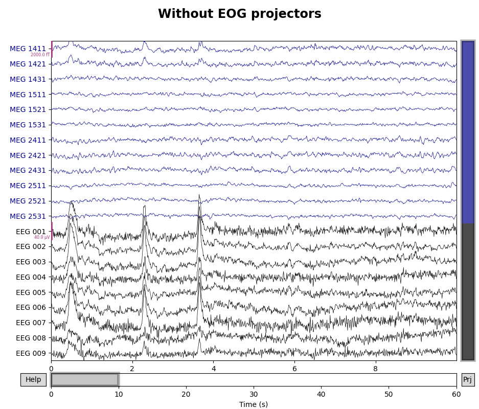
- 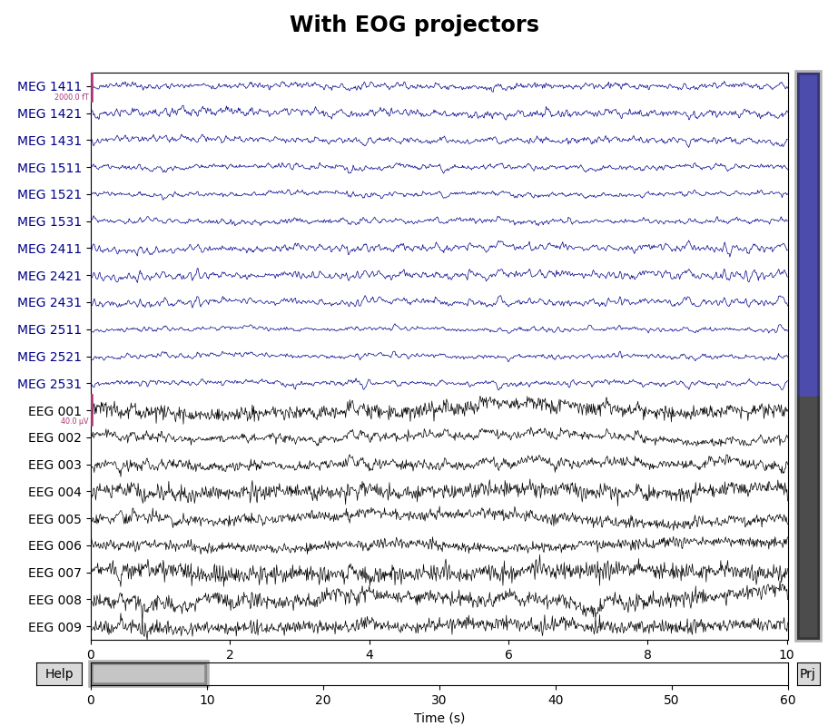
Using matplotlib as 2D backend.
Using qt as 2D backend.
3 projection items deactivated
Using matplotlib as 2D backend.
Using qt as 2D backend.
Notice that the small peaks in the first to magnetometer channels (MEG
1411 and MEG 1421) that occur at the same time as the large EEG
deflections have also been removed.
Choosing the number of projectors#
In the examples above, we used 3 projectors (all magnetometer) to capture empty room noise, and saw how projectors computed for the gradiometers failed to capture global patterns (and thus we discarded the gradiometer projectors). Then we computed 3 projectors (1 for each channel type) to capture the heartbeat artifact, and 3 more to capture the ocular artifact. How did we choose these numbers? The short answer is “based on experience” — knowing how heartbeat artifacts typically manifest across the sensor array allows us to recognize them when we see them, and recognize when additional projectors are capturing something else other than a heartbeat artifact (and thus may be removing brain signal and should be discarded).
Visualizing SSP sensor-space bias via signal reconstruction#
Because SSP performs an orthogonal projection, any spatial component in the data that is not perfectly orthogonal to the SSP spatial direction(s) will have its overall amplitude reduced by the projection operation. In other words, SSP typically introduces some amount of amplitude reduction bias in the sensor space data.
When performing source localization of M/EEG data, these projections are
properly taken into account by being applied not just to the M/EEG data
but also to the forward solution, and hence SSP should not bias the estimated
source amplitudes. However, for sensor space analyses, it can be useful to
visualize the extent to which SSP projection has biased the data. This can be
explored by using proj='reconstruct' in evoked plotting functions, for
example via evoked.plot(), here restricted to just
EEG channels for speed:
evoked_eeg = epochs.average().pick('eeg')
evoked_eeg.del_proj().add_proj(ecg_projs).add_proj(eog_projs)
fig, axes = plt.subplots(1, 3, figsize=(8, 3), sharex=True, sharey=True)
for pi, proj in enumerate((False, True, 'reconstruct')):
ax = axes[pi]
evoked_eeg.plot(proj=proj, axes=ax, spatial_colors=True)
parts = ax.get_title().split('(')
ylabel = (f'{parts[0]} ({ax.get_ylabel()})\n{parts[1].replace(")", "")}'
if pi == 0 else '')
ax.set(ylabel=ylabel, title=f'proj={proj}')
ax.yaxis.set_tick_params(labelbottom=True)
for text in list(ax.texts):
text.remove()
mne.viz.tight_layout()
Rejecting epoch based on EEG : ['EEG 001', 'EEG 002', 'EEG 003', 'EEG 006', 'EEG 007']
NOTE: pick_channels() is a legacy function. New code should use inst.pick(...).
Removing projector <Projection | axial-Raw-0.000-30.001-PCA-01, active : False, n_channels : 102, exp. var : 80.59%>
Removing projector <Projection | axial-Raw-0.000-30.001-PCA-02, active : False, n_channels : 102, exp. var : 14.59%>
Removing projector <Projection | axial-Raw-0.000-30.001-PCA-03, active : False, n_channels : 102, exp. var : 3.87%>
3 projection items deactivated
3 projection items deactivated
Created an SSP operator (subspace dimension = 2)
6 projection items activated
SSP projectors applied...
Automatic origin fit: head of radius 91.0 mm
Computing dot products for 59 EEG channels...
[Parallel(n_jobs=1)]: Using backend SequentialBackend with 1 concurrent workers.
[Parallel(n_jobs=1)]: Done 1 out of 1 | elapsed: 0.0s remaining: 0.0s
[Parallel(n_jobs=1)]: Done 1 out of 1 | elapsed: 0.0s finished
Computing cross products for 59 → 59 EEG channels...
Preparing the mapping matrix...
Truncating at 57/59 components and regularizing with α=1.0e-01
Note that here the bias in the EEG and magnetometer channels is reduced by the reconstruction. This suggests that the application of SSP has slightly reduced the amplitude of our signals in sensor space, but that it should not bias the amplitudes in source space.
References#
Total running time of the script: ( 0 minutes 50.665 seconds)
Estimated memory usage: 37 MB